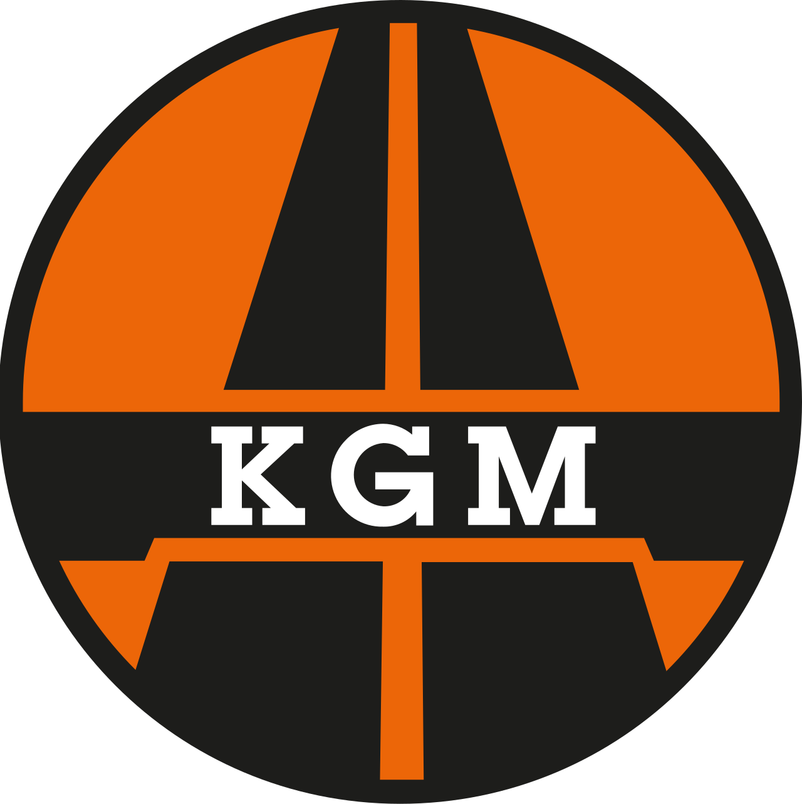
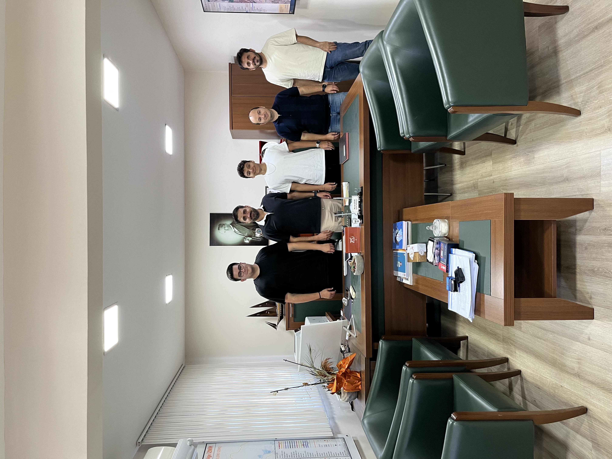

İşbirliklerimiz
Portal verilerine katkı sağlayan kurum ve kişiler

Karayolları Genel Müdürlüğü (KGM)
KGM 24. Şube Şefliği
05.10.2026
Güzelbahçe çalışmamız kapsamında ulaşım ve karayolu altyapısına ilişkin veri ve bilgi alışverişi konusunda KGM 24. Şube Şefliği ile görüşmeler gerçekleştirilmiştir.
İlgili Birim
KGM 24. Şube Şefliği
Yetkili
Murat Çelik – Şube Müdürü
Katkı Alanı
Ulaşım & Karayolu Altyapısı Verileri
Kapsam
Güzelbahçe Bölgesi

Murat Çelik
Şube Müdürü
Teşekkürler
Bu portalın geliştirilmesinde sağladıkları veri desteği ve işbirliği için tüm paydaşlarımıza teşekkür ederiz. Katkılarınız sayesinde İzmir ulaşım verilerini daha anlamlı ve erişilebilir hale getiriyoruz.